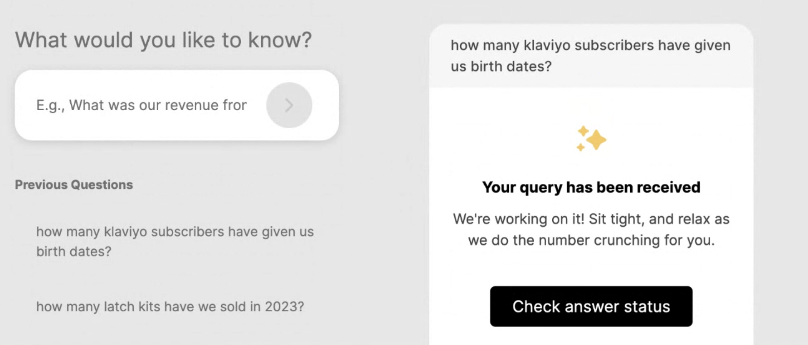
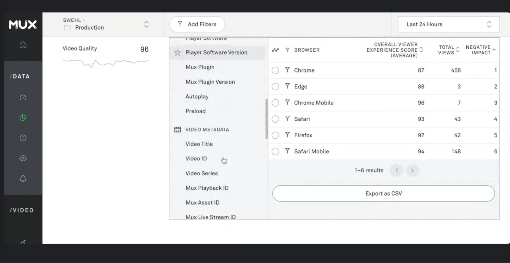

Part I - Go over areas Swehl needs help with
- They are set up on Google Analytics now
- Timeline -> next couple of weeks; launching a program
- They want to understand how many hospital partnerships they want to go until the end of the year
- They are launching a Pilot
- They want to understand if they should give margin discounts
- Babylist: seeing nice stuff there
- Insights: Registry removed
- People who are newly pregnant, they use babylist on Pinterest
- They will turn on growth marketing in the coming weeks
- Mux
- Whole new story in itself
- She will send a WeTransfer link
- They build the first version of their website 2 years ago
- Mux only provide 30 days data but their dev got then a one time 90 day pull
- They need help with
- What actually are we looking to see from the video content?
- They want insights from their content tied to their customers and purchasing behavior
- They want to do a bit more work for next time
- She wants to connect her MUX data to her customers behaviors
- She wants help with Quickbooks and Google Analytics
- They vetted several growth proposals
- Agency style + creative person
- Some of them are really in the weeds who
- Can you find anything in our ecosystem where you think we should focus for our top of funnel?
- They want to be able to write a narrative
- Having consistent UTM parameters
- Is there anything optimal we would recommend them to do?
- They don’t have any campaigns so no data there
- But given Kat’s growth expertise, where should we focus our attention to grow?
- We don’t know what people are doing after watching our videos/ content
- Analysis + Recommendation
- They are looking at agencies because…
- They are thinking of the narrative to get to the next milestone
- They want a strong narrative for their next milestone
Part II - Onboard Swehl To Our Platform
Explain to Swehl the 3 steps of the product stage
- Asynchronous (here)
- Asynchronous + Synchronous (next week)
- Asynchronous + Synchronous + Dashboard (end of July/ beginning August)
For today’s session, we would like to get your thoughts on the version we have in production today and observe how you would use the platform.
We will then onboard them to our platform.
- Now that you’ve played around with the platform, what do you think that may be missing?

I want to see a toggle
- Questions received
- In-progress
She has context of what we are building, so she knew that it would be a query page. She went back to the homepage to ask questions.
She is a brand UX person… so she wants to see a Ground 1-liner on the page.
Depending on how quickly your user will get answers, the user wants to get an ETA or a caveat of how we are getting their answer?
She wants a notification for an answer via Slack or email.
Try refreshing the page… did not know where to click to refresh
- Bug: answered question did not show up
- What information do you often search for which cannot be found on Shopify?
- They look at Klaviyo data a lot
- For their newsletter
- Are people converting after second or third trimester email
- They are interested in click through and open rate
- How many people are waiting to get this deployed to them
- They have high open rate, they are trying to understand for their media strategy
- Where to deploy capital and resources
- Runway/ burn rate question
I would use this tool to work with a team member to build a plan. Use our tool to build foundation of our compaign/ activity. I would also use answers to also put in investor update. I would also use the information in investor deck.
- Strategy
- Fundairaising
- Capital
Part III - Understanding how Swehl would use the platform other than for analyses
- Are you using ChatGPT today?
- What do you use it for? How are you using it?
- Personally
- For your business
I find a lot of errors when I ask about ChatGPT - I don't like that. What I like about you is the simplicity.
ChatGPT requires a long input. She likes that our input is shorter/ and tighter.
She is turned off by the lack of inaccuracy.
—---
Something we’ve realized working with all our design partners is that you are all highly detail-oriented. As we’re developing our product, one of our considerations is to not openly let AI make calculations by itself. Why?
- When it comes to numbers and analyses AI can sometimes hallucinate.
- AI doesn’t have full context and it takes time for the model to be trained in order for the technology to really understand the context deeply of a business
In order to tackle the issue, we are keeping the AI-type interaction experience but all the calculations are done in the backend by our team so that we always ensure accuracy in the answers we provide.
Any questions which are more qualitative focused, AI does a pretty good job of it. AI technology is great when the answers it needs to output are qualitative.
What I would like to know from you is…
- Other than making requests which are primarily quantitative, what questions or information you would like to be able to get which are qualitative?
Part IV - Build Your Own View
- What are some products are you using today where you have a dashboard?
- What do you like about their dashboard? Why?
- What do you not like about their dashboards? Why?

I have no clue what I am looking at
She likes Klaviyo a lot
- Easy enough for them to get the information
They’ve only scratched the surface with Klaviyo